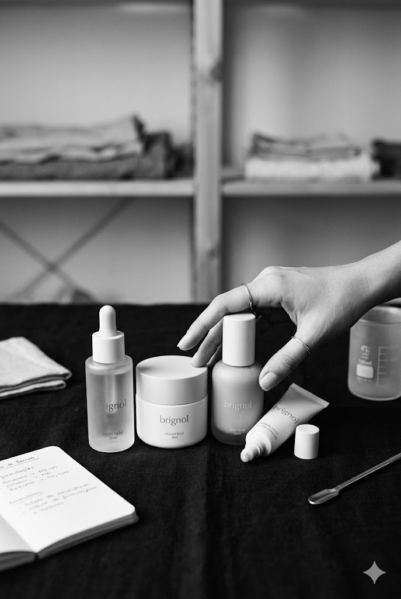

— sobre nós
a nossa
história.
não é sobre maquilhagem.
é sobre como te
sentes.
A brignol nasceu de um cansaço — o de ver prateleiras cheias de produtos que prometiam tudo e cumpriam pouco. Quisemos voltar ao essencial: poucas fórmulas, ingredientes simples e embalagens pensadas para durar.
Trabalhamos com laboratórios em Portugal, num atelier no Porto onde cada lote é testado, ajustado e aprovado por quem o desenhou. Tudo o que sai do nosso atelier passa pelas mãos de pessoas — não de máquinas anónimas.
Acreditamos que a beleza não é uma corrida. É um cuidado que se constrói com tempo, e com produtos que respeitam quem os usa.
- 01 Ingredientes naturais e rastreáveisCada fórmula é desenhada com o mínimo de componentes, sempre identificáveis.
- 02 Cruelty-free, sempreNunca testámos em animais — e não vamos começar agora.
- 03 Feito em PortugalProdução local, em pequenas séries, no Porto.

— uma palavra da fundadora
"Comecei a brignol porque procurava uma beleza mais lenta. Uma que coubesse na minha rotina sem a invadir."
Juliane Brignol · Fundadora